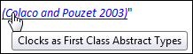

Chapter 1 - Steps to build a Scientific Web Book
The approach proposed in this book is sketched in this chapter.
1.1 File Structure
The files that shall form together a web book need to be all present in one directory. Example:
bookDirectory /resources // directory in which auxiliary files are stored _cover.html _preface.html _tableofcontents.html chapter_01.html chapter_02.html chapter_03.html chapter_04.html chapter_A.html chapter_B.html references.html
Separate files for the cover page (above: "_cover.html"),
and a template for the table of contents page (above: "_tableofcontents.html")
must be present. Additionally, the files containing the chapters,
sections, appendices, references, preface etc. must be present.
In principal the files can follow
any HTML standard. However, it is recommended to use the HTML5 standard
(defined by the first line in the files: "<!DOCTYPE html>"),
because new HTML elements like "<nav>", "<figure>", "<footer>" or "<video>"
are only available in HTML5 (for details, see the list in
w3schools).
All auxiliary files, like css, javascript, bitmap-image, svg-image, video, audio files
that are used by the book files are recommended to be stored under one directory called
"resources".
This has the advantage that the user can click on any file within
"bookDirectory" to get part of the book. This is convenient if the book is
stored locally on a disk.
1.2 Defining the Book Structure
In order that a tool can automatically build section numbers and a table of contents file, the order/sequence of the files need to be defined. This information must be defined in file "resources/configuration.json" in JSON format (this path, so directory "resources" and file name "configuration.json", is hard coded in makeWebBook to simplify the setup). Here is an example of configuration.json for this web book:
{
"BackupDirectory" : "../_backup",
"CoverFileName" : "_cover.html",
"TableOfContentsFileName" : "_tableofcontents.html",
"SectionsFileNames" : ["chapter_01.html",
"chapter_02.html",
"chapter_03.html",
"chapter_04.html"
"literature.html",
"chapter_A.html",
"chapter_B.html"]
}
All the file names are with respect to directory "bookDirectory". The "BackupDirectory" defines a directory (if it does not exist, it is created) in which backups shall be stored: Whenever a file needs to be modified, it is first moved in to the backup directory (under a newly created directory with the actual time stamp as directory name), and then the modified file is newly created. This approach is used in order to guard against bugs or non-foreseen situations in the "makeWebBook" executable (in case the modified file is corrupted, the original file is still present in the backup directory).
1.3 Updating the Book
To build a web book, execute the command:
makeWebBook bookdirectory
The executable "makeWebBook" is generated from the Go program "makeWebBook.go" that is available under the open source BSD license. It will modify the files under "bookDirectory" in the following way:
- Specific HTML elements get a number, provided a corresponding
<h1> element starts with the text Chapter or Appendix.
(otherwise the <h1> section and all elements in the section are not modified;
this is useful for a preface or a literature chapter)
In particular,
<h1>, <h2>, <h3>, <h4> elements in the section files
(= files listed in the configuration.json file under "SectionsFileNames") are updated
with a section number, for example:
<h1>: Chapter 3 - Operators and Expressions <h2>: 3.2 Array Operators <h3>: 3.2.3 Array Multiplication <h4>: 3.2.3.5 Matrix Multiplication <h1>: Appendix B - Concrete Syntax <h2>: B.2 Grammar <h3>: B.2.4 Component Clause
<caption> elements in the section files are updated with a caption number (the first number is the <h1> heading number), for example:<caption>: Table 3-4: This is a table
<figcaption> elements in the section files are updated with a figcaption number (the first number is the <h1> heading number), for example:<figcaption>: Figure 3-7: This is a figure
Equations marked by<div class="equation"> \$\$ ... \$\$ <div>are updated with an equation number (note, it is important that exactly the string <div class="equation" is used with exactly one space betweendivandclass). Example:<div class="equation"> \$\$ (2.1) \;\;\; ax^2 + bx + c = 0\$\$ <div>
If a number is not present, it is introduced. If it is present and correct, nothing is changed. Otherwise, the number is updated.
To summarize, when producing content just ignore section, caption, equation numbers since they are introduced automatically with the makeWebBook command. Note, if one of the above elements does not have an attribute id, it is automatically introduced as a random number (in order that the table of contents file can link to this element). - A navigation bar is introduced in the section files with links to the "table of contents" file, the previous, and the next file.
- The "table of contents" file is updated with the actual document
structure. A template "table of contents" file should be provided by the user,
in order to define the specific layout. A simple approach is to just
use the "_tableofcontents.html" file
of this book as template. The text within the html comments
<!-- BeginTableOfContents --> ... <!-- EndTableOfContents -->is replaced by the actual document structure. If no "table of contents" file is present, a default one is generated. - The "cover" file is not modified by makeWebBook in order to allow specific layouts (e.g. some users might prefer to not have a navigation bar in the cover file).
1.3.1 Example of a h3 subsection
This is an example of a h3 subsection. In the "tables of contents" file by default only h1 and h2 sections are shown. When clicking in the tool bar on "Expand/Collapse" also h3 and h4 sections, as well as figure and table captions are shown. The "Expand/Collapse" feature is implemented with a simple jquery script. Only for this reason, the Javascript library jquery is included under "resources/styles".
1.3.1.1 Example of a h4 subsection
This is an example of a h4 subsection. Also h5, h6 etc. subsections can be used in a document. However, the makeWebBook command processes subsections only up to h4 (so h5, h6 etc. remain unchanged and do not get a section number).
1.4 Defining Figures and Tables
Figures are defined, as usual in HTML5, with element <img> for bitmaps or element <svg> for vector graphics together with a caption defined with element <figcaption>. For example
<figure> <figcaption id="fig-Drive_Train_1">Simple drive train 1</figcaption> <img src="resources/media/drive1.png"/><br> <figure>
is rendered as
In a similar way a table defined as
<table>
<caption id="table-Example_for_a_table">Example for a table</caption>
<tr><th>Column header 1</th>
<th>Column header 2</th>
<th>Column header 3</th>
</tr>
<tr><td>Row 2-1</td>
<td>Row 2-2</td>
<td>Row 2-3</td>
</tr>
<tr><td>Row 3-1</td>
<td>Row 3-2</td>
<td>Row 3-3</td>
</tr>
</table>
is rendered as
| Column header 1 | Column header 2 | Column header 3 |
|---|---|---|
| Row 2-1 | Row 2-2 | Row 2-3 |
| Row 3-1 | Row 3-2 | Row 3-3 |
1.5 Defining Mathematical Equations
Mathematical equations are a central element in every scientific book. There is no fully satisfactory solution to define equations on a web page or in a web book. Defining an equation in another program, making a screen shot and then include it as a figure is (a) inconvenient to do and (b) the display quality is not good, especially when zooming in or out. In the approach from this web book, instead the open source Javascript library jqmath is used that constructs mathematical equations with a combination of Javascript, MathML and mathematical symbols of Unicode. Similar as for section headings, figure and table headings, the "makeWebBook" program also numbers the equations. In the next subsection, it is shown how to practically use jqmath. In subsection 1.5.2 it is explained why the popular Javascript library MathJax is not used (most likely the automatic equation numbering would also work for MathJax, but this has not been tested).
1.5.1 How to use jqmath
In order that jqmath can be used, the following lines must be copied
into the head section of the HTML file to load the needed Javascript
library and CSS definitions from the resources/styles
directory:
<link rel="stylesheet" type="text/css" href="resources/styles/jqmath-0.4.3.css"> <script type="text/javascript" src="resources/styles/jquery-2.1.4.min.js"></script> <script type="text/javascript" src="resources/styles/jqmath-etc-0.4.3.min.js" charset="utf-8"></script>
Afterwards mathematical equations can be formulate. The following line contains an inline formula:
If $ax^2+ bx + c = 0$ with $a,b,c,x ∊ ℝ$ and $a ≠ 0$, then (1.1) holds:
This line is defined in HTML as
If \$ax^2+ bx + c = 0\$ with \$a,b,c,x ∊ ℝ\$ and \$a ≠ 0\$, ...
A jqmath inline formula is delimited by \$ ... \$. Characters like "∊" are regular Unicode characters that are used in the equation. A large set of often used mathematical Unicode symbols of this kind are listed on the jqmath web page (and in Appendix B) and can be selected and copied into a text editor.
The next line shows a block equation that is numbered:
This equation is defined in HTML in the following way:
<div class="equation" id="eq-solveQuadraticEquation">
\$\$ (1.1) \;\;\;\;\;
x_{1,2} = {-b ± √{b^2-4ac} } / {2a}
\$\$
</div>
The <div ...> block defines that the included part contains a numbered equation.
The id is used in order to reference the equation from somewhere else.
The block equation is defined by \$\$ ... \$\$. The same technique as for inline equations is
used to define the actual block equation. However, directly after the starting \$\$ the equation
number must be present, here: (1.1). The "makeWebBook" program updates this number automatically
or introduces it, if it is not present. After the equation number a certain amount of space
should be present. In jqmath thin space is defined by \\,, medium space by \\: and
larger space by \\;. In this book, the larger space \\; is used 5 times.
Afterwards, the actual equation is present.
Note, if an equaiton is defined just by \$\$ ... \$\$ but without a surrounding
<div class="equation"> element, the equation is not numbered.
Below other examples are present that show the type of equations that can be described with jqmath. In order to figure out how these definitions have been made, inspect the source code of this HTML file.
Newtons equations for the angular momentum in one dimension is stated as:
The vector equations for linear and angular momentum in three dimensions can be defined as:
The following lines are from Appendix D of the Modelica Specification:
Consider a connection set with n connectors. The mixing enthalpy is defined by the mass balance
and the energy balance
with
The following equation is a direct copy of equation (10) of (Heckmann et al. 2012) showing a complex matrix equation:
1.5.2 Why jqmath and not MathJax?
The Javascript library MathJax provides the most sophisticated approach for rendering equations on the web. It is also cited and referenced a lot. The main advantage of MathJax is the quality of the rendering in any web browser, as stated on the MathJax web page: "Beautiful math in all browsers". For this approach it uses a combination of HTML, CSS, special fonts (such as STIX fonts), MathML and SVG depending on the available features of the underlying browser.
The drawbacks of MathJax are:
- MathJax has very slow rendering. For example in MathJax version 2.5 it takes several seconds on my (fast) computer to render even simple equations. You can easily try this by your self by inspecting MathJax examples from the MathJax web page. In contrast, jqmath is much faster and rendering equations is as fast as any other HTML text.
- MathJax is huge. The MathJax 2.5 distripution is a 33 Mbyte zip-file. The unzipped installation has a size of 57 Mbyte. Therefore, the only practical way to work with MathJax is via a web server (either the MathJax web server or an own local one). The goal of the approach described in this book is to copy a web book to a local computer and read it without internet connection or any other resources (in a similar way as an epub book). It is not practical to ship with every book 57 Mbyte of style files and fonts. I tried to reduce this and by "trial and error" manually reduced the distribution until only the highest quality approach with HTML + CSS + STIX fonts was kept and all other approaches are removed. This gave a distribution of about 2 Mbyte size (unzipped). This is still large and not very practical. The jqmath distribution has a size of 43 Kbyte (+ 83 Kbyte for jquery which is also used for other purposes in the book) and can therefore easily be shipped with every web book.
- MatJax defines equations with LaTeX, whereas jqmath defines equations in a TeX
like way, where keywords are replaced by Unicode mathematical characters
(e.g. instead of using the TeX keyword
\omegathe Unicode characterωis used). If the underlying text editor can display these symbols (see section 2.2 for details), then equations with jqmath are more compact and easier to read as the LaTeX definition with its many keywords. Here is an example of equation (1.1).
LaTeX definition :x_{1,2} = \frac{{ -b \pm \sqrt{b^2 - 4ac} }}{{2a}}}
jqmath definition:x_{1,2} = {-b ± √{b^2-4ac} } / {2a}
Here is an example of equation (1.2).
LaTeX definition :J \cdot \dot{\omega} = \tau
jqmath definition:J·ω↖{.} = τ
The jqmath approach has the following drawbacks:
- From the jqmath web page: "The jqmath Javascript library uses MathML when available else simple HTML and CSS, and avoiding pixel-map images". Good rendering results can only be expected if the underlying browser supports MathML. For example, rendering this page with Internet Explorer 9 shows the above equations, but the rendering is very bad because Internet Explorer 9 does not support MathML. Note, Chrome does not support MathML anymore see here for some explanation.
- In the MathJax documentation it is stated that browsers have rendering bugs for MathML even if they claim to support MathML and therefore it is usually safer to use the HTML+CSS+Font approach in MathJax instead of the MathML approach.
- Not every equation that can be expressed with MathJax/LaTeX
can also be expressed with jqmath (so MathJax/LaTeX is more general).
The jqmath examples in section 1.5.1
and on the jqmath web page
show that the difference is not large. The following features are currently
recognized to be available in MathJax/LaTeX but not in jqmath:
- In LaTeX a more fine grained positioning of equations below each other is possible.
- In LaTeX a more fine grained positioning of the elements in an array is possible.
- In LaTeX several equations that are defined together can be numbered as, say, (2.1a), (2.1b) etc. It is not clear how to support such numbering with the concept presented here.
This book has been developed with Firefox version 40 and renders here nicely. Also other Gecko-based browsers should be fine.
1.6 Defining Source Code Syntax Highlighting
As usual in HTML, source code of a programming or modeling language can be defined in a <pre> environment. In order to get automatic syntax highlighting, Javascript can be used. In this web book, a Javascript script (= resources/styles/modelica.js) is provided for the modeling language Modelica. For example, Modelica code defined as
<pre class="Modelica"> model Inertia "1D-rotational component with inertia" import Modelica.Mechanics.Rotational; parameter SI.Inertia J(min=0, start=1) "Moment of inertia"; Rotational.Interfaces.Flange_a flange_a; Rotational.Interfaces.Flange_b flange_b; SI.Angle phi "Absolute rotation angle of component"; SI.AngularVelocity w "Absolute angular velocity of component (= der(phi))"; equation // The two flanges are rigidly connected phi = flange_a.phi; phi = flange_b.phi; // Momentum equation w = der(phi); J*der(w) = flange_a.tau + flange_b.tau; end Inertia; </pre>
is rendered as
model Inertia "1D-rotational component with inertia" import Modelica.Mechanics.Rotational; parameter SI.Inertia J(min=0, start=1) "Moment of inertia"; Rotational.Interfaces.Flange_a flange_a; Rotational.Interfaces.Flange_b flange_b; SI.Angle phi "Absolute rotation angle of component"; SI.AngularVelocity w "Absolute angular velocity of component (= der(phi))"; equation // The two flanges are rigidly connected phi = flange_a.phi; phi = flange_b.phi; // Momentum equation w = der(phi); J*der(w) = flange_a.tau + flange_b.tau; end Inertia;
For other languages there are many Javascript libraries on the web that provide syntax highlighting, for example highlightjs, rainbows, google-code-prettify. All these libraries, as well as the special Modelica Javascript library provided by this book, use regular expressions to parse the code and then highlight syntax elements. This means that syntax highlighting is not perfect, because most languages cannot be parsed just by a regular expression parser (this means in corner cases there might be "wrong" syntax highlighting).
1.7 Defining Bibliographic References
An example of a reference section is shown in section References:
<ul class="references">
<li id="ref-Benveniste_et_al._2003" title="(Benveniste et al. 2003)" > ... </li>
<li id="ref-Colaco_and_Pouzet_2003"
title="(Colaco and Pouzet 2003)">Colaco J.-L., and Pouzet M. (2003):
<strong>Clocks as First Class Abstract Types</strong>.
In Third International ...</li>
...
</ul>
The different items are defined as an unordered list. The list start
<ul class="references"> defines a special formatting via the
CSS style file (resources/styles/stylesheet.css) by removing the "bullet" point
and formating the list entry as usual in a references section.
Additionally, every list entry is marked by an "id" such as id="ref-Colaco_and_Pouzet_2003",
to reference this bibliographic element and by "title" such as
(Benveniste et al. 2003) to define how the element shall be referenced
in the text. Bibliographic elements can be referenced in the main part of a book in the following way:
- "The approach in this chapter is based on the clock calculus and inference system proposed by (Colaco and Pouzet 2003)"
- "These approaches belong to the class of synchronous languages (Benveniste et al. 2003)."
A reference is just a link where the id from the reference section is used, for example:
... and inference system proposed by
(<a href="#ref-Colaco_and_Pouzet_2003"></a>)
The makeWebBook program changes this definition in the HTML file to:
... and inference system proposed by
(<a href="references.html#ref-Colaco_and_Pouzet_2003"
title="Clocks as First Class Abstract Types">(Colaco and Pouzet 2003)</a>)
The following changes are made (or existing attributes are updated):
- The name of the file is introduced where the
idis defined (here:references.html). - The
titledefinition of the reference section is used as link text (here:(Colaco and Pouzet 2003)). - The text that is within the
<strong> ... </strong>marking in the reference section is used as tooltip by defining it astitleattribute (here:title="Clocks as First Class Abstract Types"). As a result, when hovering with the mouse over the link, this title is displayed, see next figure, or try it directly out by hovering over one of the references above:Figure 1-2: When hovering over a cross reference the title attribute is displayed 
1.8 Defining Cross References
Besides cross references to bibliographic elements,
see section 1.7,
also sections, figures, tables, and equations can be referenced. As with bibliographic elements it
is sufficient to just use a definition of the form <a href="xxx"></a>
and the makeWebBook program adds the file name, the link text, and a tool tip.
For example, the following cross reference definitions:
see <a href="#h1-tools"</a><br> see section <a href="#h2-Defining_the_book_structure"></a><br> see <a href="#fig-Drive_Train_1"></a><br> see <a href="#table-Example_for_a_table"></a><br> see equation <a href="#eq-flexible-body-equations"></a><br>
are changed (or existing attributes are updated if needed)
by the makeWebBook program to:
see <a href="chapter_02.html#h1-tools" title="Chapter 2 - Tools">Chapter 2</a><br> see section <a href="#h2-Defining_the_book_structure" title="1.2 Defining the Book Structure">1.2</a><br> see <a href="#fig-Drive_Train_1" title="Figure 1-1: Simple drive train 1">Figure 1-1</a><br> see <a href="#table-Example_for_a_table" title="Table 1-1: Example for a table">Table 1-1</a><br> see equation <a href="#eq-flexible-body-equations">(1.7)</a><br>
resulting in
see Chapter 2
see section 1.2
see Figure 1-1
see Table 1-1
see equation (1.7)
If a link contains a tool tip, it is displayed in italic font. As can be seen above, with exception of the "see equation (1.7)" cross reference, all cross references have a tool tip.
If a link seems to link to another part of the book but it cannot be figured out to which part, a warning message is printed with an explanation.
1.9 Style Files
As usual, the rendering of the files is defined by CSS-files. In this web book, a very simple CSS style file is used (resources/styles/stylesheet.css). Only in the "_tableofcontents.html" file additional CSS definitions are present to describe the special effects needed for a"table of contents". Of course, much more involved style files can be used for a web book (for example bootstrap). When including a new style file, there is always the risk that there is an unwanted interdependence with style files already present. It is then not often easy to figure out, why a page does no longer look as expected. For example, when introducing the "jqmath-0.4.3.css" style file to display jqmath equations, the equation looked not as good as on the jqmath web page. The reason was that a "*" CSS definition was present in stylesheet.css to define a default font and font size for all elements. After removing this default setting, the equations are displayed as they should.